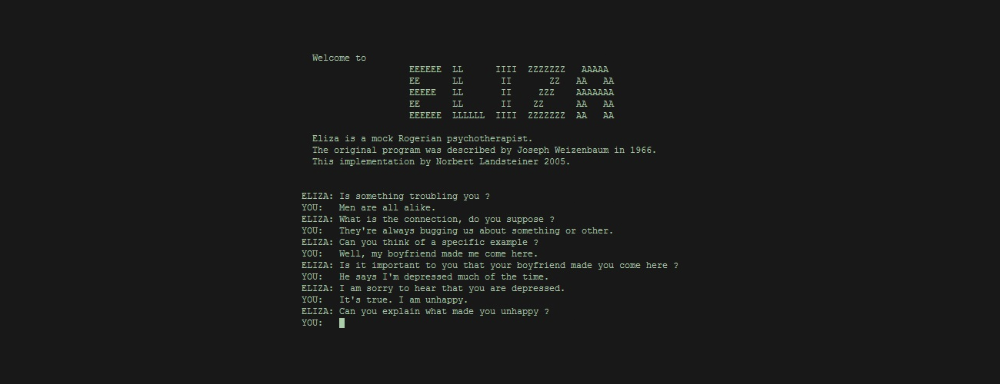
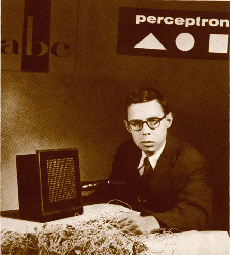

Что такое нейросети?
Нейронные сети - это программа, которая умеет обучаться на основе данных и примеров. То есть она не работает по готовым правилам и алгоритмам, а пишет их сама во время обучения. Если показать ей миллион фотографий котов, она научится узнавать их в любых условиях, позах и костюмах.
Однa из наиболее известных первых нейронных сетей стала ELIZA, разработанная Джозефом Вейценбаумом в 1964-1966 годах. Этот сервис был способен имитировать диалог с человеком, используя набор определенных скриптов. Несмотря на простоту своего алгоритма, ELIZA оказала большое влияние на развитие нейросетей и часто используется как пример раннего искусственного интеллекта.
Идею искусственной нейронной сети предложил нейрофизиолог Фрэнк Розенблатт в 1957 году и реализовал ее в нейрокомпьютере «Марк-1» в 1960-м. Математическая модель такой сети получила имя «перцептрон», а само устройство представляло собой небольшой компьютер, снабженный табло из нескольких сотен фотоэлементов. Показывая компьютеру изображения, а затем корректируя весовые коэффициенты связей искусственных нейронов, можно было научить нейронную сеть распознавать геометрические фигуры и некоторые буквы алфавита. По нынешним временам «Марк-1» — это игрушка. К тому же она страдала от множества проблем: к примеру, изображения не распознавались при деформации или повороте. Сейчас понятно, что при тогдашнем уровне вычислительной мощности многие вещи просто нельзя было реализовать. Перцептроны интересны скорее с исторической точки зрения — реальных задач они не решали. В 1969 году Марвин Минский и Сеймур Паперт описали эти опыты в книге «Перцептроны», после чего исследования в области нейросетей были свернуты в пользу, как тогда казалось, более перспективных символьных вычислений.
